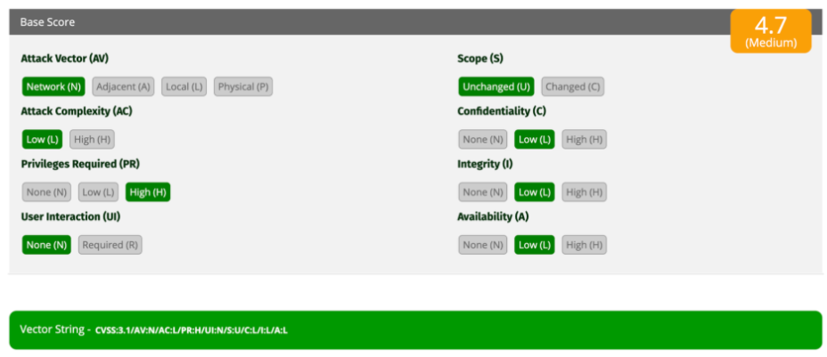

EVIDENCIA TÉCNICA: CVSS v3.1 ANALYSIS
Contextualización del Escenario
Un entorno corporativo identificó una vulnerabilidad crítica latente en uno de sus servidores web de producción[cite: 166]. Con el propósito de categorizar el riesgo operacional, priorizar el despliegue de parches de seguridad y mitigar posibles vectores de intrusión de red[cite: 166, 167], se procedió al modelado del fallo técnico empleando el estándar internacional de métricas de la calculadora Common Vulnerability Scoring System (CVSS v3.1).
Desglose de Métricas Base & Justificación Técnica
| Métrica Base | Valor | Justificación & Impacto Táctico |
|---|---|---|
| Attack Vector (AV) | Network (N) | El fallo es explotable de manera remota a través de protocolos de red sin requerir acceso físico. |
| Attack Complexity (AC) | Low (L) | No existen condiciones especiales; el ataque es altamente reproducible por un actor malicioso. |
| Privileges Required (PR) | High (H) | El atacante requiere credenciales con privilegios elevados de administración para ejecutar el exploit. |
| User Interaction (UI) | None (N) | La explotación es completamente autónoma; no requiere interacción ni engaños a un usuario. |
| Scope (S) | Unchanged (U) | El impacto de la explotación queda estrictamente confinado al recurso web interno afectado. |
| Confidentiality (C) | Low (L) | Acceso o filtración parcial de información no crítica del aplicativo web expuesto. |
| Integrity (I) | Low (L) | Modificación limitada de parámetros lógicos del sistema sin pérdida de control del host. |
| Availability (A) | Low (L) | Interrupciones marginales o degradación del rendimiento del software durante el ataque. |
Métricas Visuales de la Calculadora CVSS v3.1
> BASE_METRICS_GRAPH_RENDER_OK [IMAGE_ID: CVSS_3]

Figura 2.1: Mapeo concéntrico de las propiedades del vector base analizado para el Equipo 2.
Análisis Crítico & Propuestas de Mitigación
Evaluación de Amenazas Asociadas:
A pesar de que un score de 4.7 se clasifica en una severidad moderada debido a la restricción de privilegios requeridos altos (PR:H), ignorar el fallo representa un riesgo latente para la gobernanza interna. Los actores de amenazas suelen explotar vulnerabilidades de severidad media como eslabones intermedios dentro de una cadena de intrusión compleja, combinándolas con vectores iniciales de compromiso (como la reutilización de credenciales o elevación local de privilegios).
Mitigación & sugerencias de control técnico:
A pesar de que un score de 4.7 se clasifica en una severidad moderada debido a la restricción de privilegios requeridos altos (PR:H), ignorar el fallo representa un riesgo latente para la gobernanza interna. Los actores de amenazas suelen explotar vulnerabilidades de severidad media como eslabones intermedios dentro de una cadena de intrusión compleja, combinándolas con vectores iniciales de compromiso (como la reutilización de credenciales o elevación local de privilegios).
Mitigación & sugerencias de control técnico:
- Auditoría de Credenciales y Roles: Implementar políticas robustas de contraseñas y reducir el número de cuentas con privilegios administrativos altos.
- Mecanismos de Autenticación Fuerte: Imponer de manera obligatoria esquemas de autenticación multifactor (MFA) para mitigar el riesgo de secuestro de sesiones.
- Monitoreo y Control de Logs: Configurar alertas perimetrales ante comportamientos anómalos o peticiones de red inusuales provenientes de usuarios con roles elevados.
- Revisión Continua de Código: Ejecutar pruebas estáticas (SAST) y parches constantes en el software para eliminar fallas de inyección lógicas.